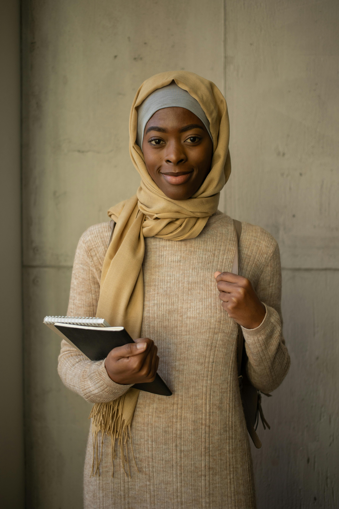

Our CAMPUSES
Our learning facilities and environment are designed to be child-friendly and safe, and we also provide hostel amenities.

SCHOOL CAMPUS

BOYS HOSTEL

At IKRAAM IDEAL MODEL SCHOOLS-Bridging Cultures, Nurturing Minds, we
believe in the power of education to transcend cultural boundaries
and create a harmonious learning environment where students
thrive academically, morally, and culturally.
Our school stands
as a unique blend of Islamic and Western educational philosophies,
offering a holistic learning experience that prepares students
for success in a diverse and interconnected world.
Admissions are in progress into:
nursery school, pre-primary school, play school or creche, is an educational establishment or learning space offering early childhood education to children before they begin compulsory education at primary school.
Programmes typically designed to provide students with fundamental skills in reading, writing and mathematics and to establish a solid foundation for learning.
First stage of secondary education building on primary education,
typically with a more subject-oriented curriculum.
Second/final
stage of secondary education preparing for tertiary education or
providing skills
relevant to employment. Usually with an
increased range of subject options and streams.
Our learning facilities and environment are designed to be child-friendly and safe, and we also provide hostel amenities.
At IKRAAM IDEAL MODEL SCHOOLS, we have different and useful facilities.

well equipped library available to all students of the school at any time

Our Basketball facility available to all students of the school at any time

Yummy balanced diet available to all students of the school at any the cafeteria
Read the testimonies of our past Alumnis

Beyond the classrooms, the bonds forged with fellow students and
the guidance of mentors created an invaluable support system.
IKRAAM IDEAL MODEL SCHOOLS is not just a school; it's a community
that instills a sense of belonging and encourages each student to
reach their full potential.
Today, as I reflect on my
journey, I carry with me the confidence to navigate diverse
cultures and the compassion to contribute positively to society.
I am not just a graduate of IKRAAM IDEAL MODEL SCHOOLS; I am
a product of an institution that believes in empowering minds and
hearts.

The Islamic values embedded in every lesson, every prayer, and
every interaction provided me with a moral compass that guides me
to this day.
The rigorous academic curriculum, expertly
delivered by passionate educators,equipped me with the knowledge
and critical thinking skills necessary for success in the wider
world.
What sets IKRAAM IDEAL MODEL SCHOOLS apart is its commitment to
nurturing well-rounded individuals. From engaging extracurricular
activities to a vibrant cultural tapestry that celebrates
diversity, this school prepares students not just for exams but
for life's multifaceted challenges.